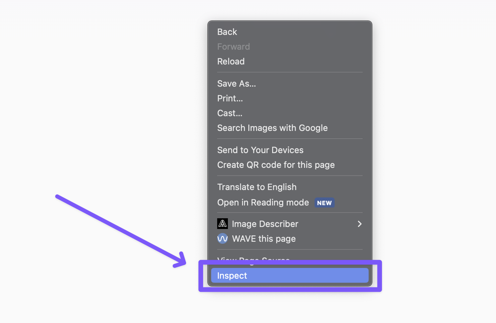
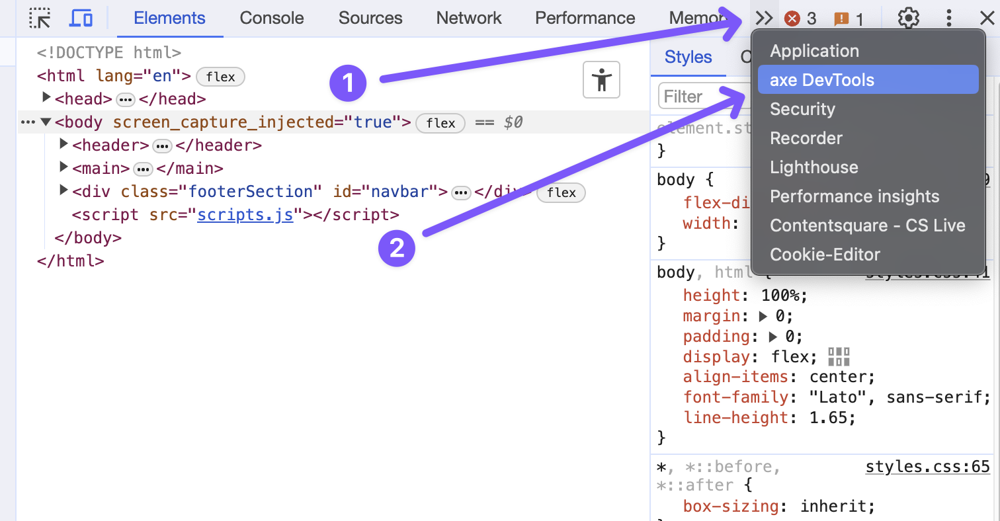
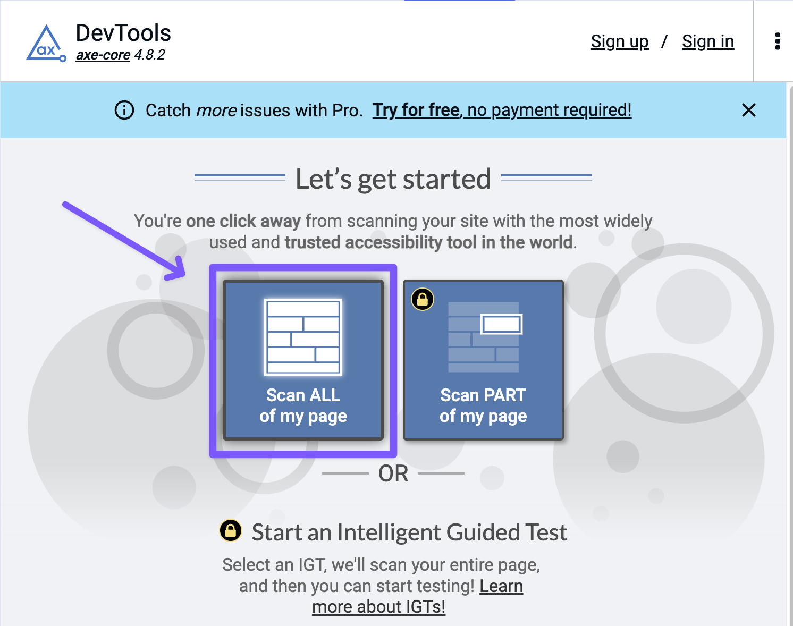
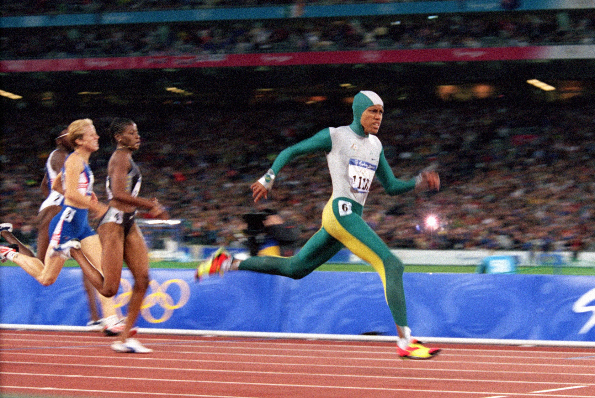
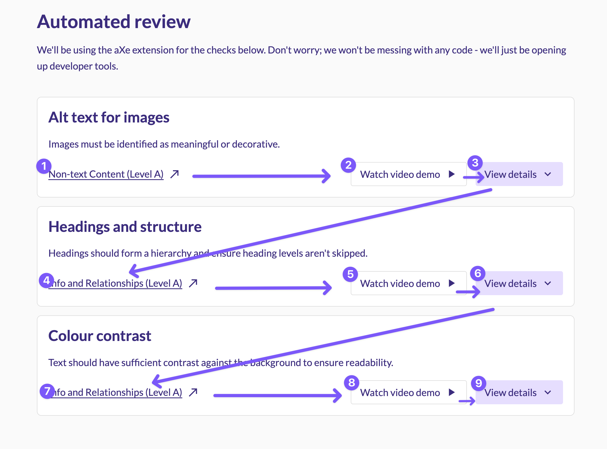
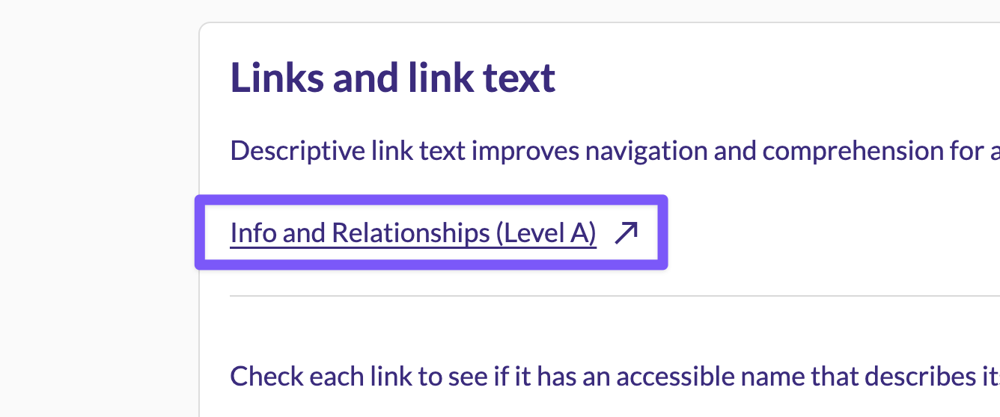

Simple accessibility guidance
Sa11y is a helpful tool that provides easy-to-follow steps for beginners to review a website for accessibility issues.

Getting started

Make your way down the page, reviewing each step. By the end, you should have completed a thorough accessibility review. Please don't hesitate to reach out if you encounter any issues or find anything unclear.
Setting up
Before you start looking for accessibility issues, let's get set up with some tools.
To get started, this page is separated into two parts: automated testing and manual testing.
This is because some things are easier to check with a tool or extension. They save time and are more efficient when checking certain things. However, these tools can't cover everything and sometimes can miss critical issues, so we complement it with manual checks.
Before we get started, we need to download a tool to run our automated tests. We will utilise aXe by Deque University. It's free and runs on your web browser. Go ahead and download it.
Download aXe extentsion north_east
- First, open up your developer tools by using the (CMD + SHIFT + i) for mac or (WINDOWS + SHIFT + i) for windows. This will display all the code used to generate the web page. You can also (RIGHT-CLICK) anywhere on the screen and select "Inspect". 
- Next, click on the little submenu located in the top right corner of the page and select the aXe tool from the list. 
- Click on the "Scan page" button and wait for it to complete the scan. Any issues detected will be displayed at the bottom of the page. 
Here are the steps to access and run the tool after installing it:
Although it may appear overwhelming if lots of issues appear, we will go through key issues to look out for below.
Now you know how to run the aXe extension let's continue to the Automated testing.
Helpful resources
-
Download aXe extentsion north_east
Automated review
We'll be using the aXe extension for the checks below. Don't worry; we won't be messing with any code - we'll just be opening up developer tools.
Alt text for images
Images must be identified as meaningful or decorative.
Non-text Content (Level A) north_east
- Run the aXe accessibility tool.
-
Check the following:
-
Images that convey information unavailable through other
content should have an alt tag.
-
Meaningful:
Alt="What gets read goes here"
-
Meaningful:
-
Images that provide no information, such as illustrations,
must be coded as decorative.
- Decorative:
Alt=""
- Decorative:
- The rule of thumb used to determine whether an image is informative is to remove it from the screen: if I am missing information because the image is gone, then it means the image is informative and needs alt text.
- Check any images with alt text are descriptive and relevant. This requires some manual intervention, but we want to ensure alt text is accurate. 
-
Images that convey information unavailable through other
content should have an alt tag.
Let's use the above image to see and example of Bad and Good alt text;
- Bad Alt text: "A group of marathon runners."
- Good Alt text: "Cathy Freeman in action at the 2000 Sydney Olympics, wearing her iconic green and gold body suit and white cap, dominating the track event with fierce competition in the backdrop."
Why this helps
It can be difficult for individuals who are visually impaired to interpret images. Correct markup and good text alternatives make them accessible to everyone. Actual text is better than images of text because it can be adjusted for legibility.
Helpful resources
-
Intro to accessible content – Guide Dogs Australia north_east
-
Australian Goverment – Style manual north_east
Headings and structure
Headings should form a hierarchy and ensure heading levels aren't skipped.
Info and Relationships (Level A) north_east
- Run the aXe accessibility tool.
-
Check if any Heading issues appear:
- Headings should follow order (h1, h2, h3, etc).
- Headings should follow how you would read the page's content.
- Headings shouldn't skip levels (h1 to h3, for example).
- Headings of the same level should have the same font style (look).
Why this helps
Heading levels help convey the relative importance of headings
on a webpage. People with good eyesight can distinguish the
importance of a heading by its visual appearance, with
higher-level headings generally having greater visual
prominence than lower-level ones.
On the other hand, users of assistive technology rely on
programmatic cues to perceive heading levels.
Helpful resources
Colour contrast
Text should have sufficient contrast against the background to ensure readability.
Info and Relationships (Level A) north_east
- Run the aXe accessibility tool.
-
Check if any colour contrast issues appear:
- Ensure elements are in their default state (not disabled or selected, without mouseover or input focus).
- No minimum contrast ratio is required if a component is in an inactive/disabled state.
Why this helps
The readability of your content is greatly influenced by its contrast. It is essential for users with low vision or colour blindness. A good colour contrast will make your content accessible to everyone, regardless of the device or lighting in their surroundings.
Helpful resources
Manual review
The following checks are best done manually; some require you to use a keyboard and visually identify interactive elements.
Navigation
Navigate through your site with just a keyboard.
Info and Relationships (Level A) north_east
This page has four points to review. We will go through them one by one for this demonstration. As you become more comfortable, you can review them all at once.
-
Keyboard navigation:
-
Check that all interactive elements (buttons, links, or
anything that can be interacted with) can be reached using
the tab and arrow keys. Can you navigate through the whole
page with just the keyboard?
-
Focus indicators:
-
Make sure all interactive elements have a visual indicator
when in focus. This is typically a border or colour change
when tabbed through. See image below for example.
-
Tab order:
-
As you tab through your page, check the order is consistent
with the visual, logical order. Does the order in which you
tabbed follow a similar order in how you would read the
content on the page?

-
Keyboard traps:
-
Keyboard traps are when you tab into an element with no way
out. Commonly found with Date pickers and modals that take
over the focus. Just double-check that you can tab through
the whole page without getting trapped.

Why this helps
It's important for web apps to let users navigate through all interactive components using a keyboard. If users can't access these components, they won't be able to use the app. Keyboard navigation is especially critical for people with disabilities such as blindness, low vision, or hand tremors who rely on it to access these elements.
Helpful resources
Links and link text
Descriptive link text improves navigation and comprehension for all users.
Info and Relationships (Level A) north_east
Check each link to see if it has an accessible name that describes its purpose.
- If a link leads to a document or web page, the name is of the page is sufficient.
- For hyperlinks, it is essential to use unique text for each link that leads to a different destination.
- Use the same link text for all the links that lead to the same destination.
-
Links that open new tabs should show an external icon and
announce that it will open a new window. I haven't gone into
ARIA in this page, but we use ARIA to let
screen reader users know the link will open a new window like
this.
aria-label="visit sa11y.com (opens in a new window)"

Why this helps
It is important for users to understand the purpose of a link before deciding whether to follow it. When the text of the link is unclear, sighted users can use the context around it to get an idea of what it means. Similarly, assistive technologies can help non-sighted users by providing them with the link's related context.
Helpful resources
Form labels
Every input field is accompanied by a clear label that describes its purpose.
Info and Relationships (Level A) north_east
Check each link to see if it has an accessible name that describes its purpose.
- If a link leads to a document or web page, the name is of the page is sufficient.
Why this helps
It is important for users to understand the purpose of a link before deciding whether to follow it. When the text of the link is unclear, sighted users can use the context around it to get an idea of what it means. Similarly, assistive technologies can help non-sighted users by providing them with the link's related context.
Helpful resources
This page does not guarantee your website is accessible. However, addressing the issues found will improve the user experience for everyone.
Our recommendations leverage WCAG best practices, industry experience, academic research, and data insights.